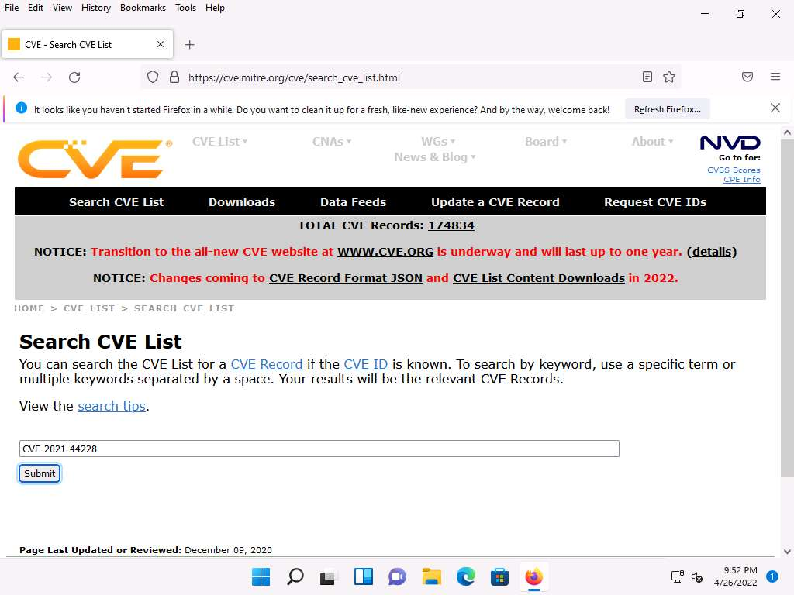

Module 05: Vulnerability Analysis
Scenario
Earlier, all possible information about a target system such as system name, OS details, shared network resources, policies and passwords details, and users and user groups were gathered.
Now, as an ethical hacker or penetration tester (hereafter, pen tester), your next step is to perform vulnerability research and a vulnerability assessment on the target system or network. Ethical hackers or pen testers need to conduct intense research with the help of information acquired in the footprinting and scanning phases to discover vulnerabilities.
Vulnerability assessments scan networks for known security weaknesses: it recognizes, measures, and classifies security vulnerabilities in a computer system, network, and communication channel; and evaluates the target systems for vulnerabilities such as missing patches, unnecessary services, weak authentication, and weak encryption. Additionally, it assists security professionals in securing the network by determining security loopholes or vulnerabilities in the current security mechanism before attackers can exploit them.
The information gleaned from a vulnerability assessment helps you to identify weaknesses that could be exploited and predict the effectiveness of additional security measures in protecting information resources from attack.
The labs in this module will give you real-time experience in collecting information regarding underlying vulnerabilities in the target system using various online sources and vulnerability assessment tools.
Objective
The objective of this lab is to extract information about the target system that includes, but not limited to:
- Network vulnerabilities
- IP and Transmission Control Protocol/User Datagram Protocol (TCP/UDP) ports and services that are listening
- Application and services configuration errors/vulnerabilities
- The OS version running on computers or devices
- Applications installed on computers
- Accounts with weak passwords
- Files and folders with weak permissions
- Default services and applications that may have to be uninstalled
- Mistakes in the security configuration of common applications
- Computers exposed to known or publicly reported vulnerabilities
Overview of Vulnerability Assessment
A vulnerability refers to a weakness in the design or implementation of a system that can be exploited to compromise the security of the system. It is frequently a security loophole that enables an attacker to enter the system by bypassing user authentication. There are generally two main causes for vulnerable systems in a network, software or hardware misconfiguration and poor programming practices. Attackers exploit these vulnerabilities to perform various types of attacks on organizational resources.
Lab Tasks
Ethical hackers or pen testers use numerous tools and techniques to collect information about the underlying vulnerability in a target system or network. Recommended labs that will assist you in learning various vulnerability assessment techniques include:
- Perform vulnerability research with vulnerability scoring systems and databases
- Perform vulnerability research in Common Weakness Enumeration (CWE)
- Perform vulnerability research in Common Vulnerabilities and Exposures (CVE)
- Perform vulnerability research in National Vulnerability Database (NVD)
- Perform vulnerability assessment using various vulnerability assessment tools
- Perform vulnerability analysis using OpenVAS
- Perform vulnerability scanning using Nessus
- Perform web servers and applications vulnerability scanning using CGI Scanner Nikto
Lab 1: Perform Vulnerability Research with Vulnerability Scoring Systems and Databases
Lab Scenario
As a professional ethical hacker or pen tester, your first step is to search for vulnerabilities in the target system or network using vulnerability scoring systems and databases. Vulnerability research provides awareness of advanced techniques to identify flaws or loopholes in the software that could be exploited. Using this information, you can use various tricks and techniques to launch attacks on the target system.
Lab Objectives
- Perform vulnerability research in Common Weakness Enumeration (CWE)
- Perform vulnerability research in Common Vulnerabilities and Exposures (CVE)
- Perform vulnerability research in National Vulnerability Database (NVD)
Overview of Vulnerabilities in Vulnerability Scoring Systems and Databases
Vulnerability databases collect and maintain information about various vulnerabilities present in the information systems.
The following are some of the vulnerability scoring systems and databases:
- Common Weakness Enumeration (CWE)
- Common Vulnerabilities and Exposures (CVE)
- National Vulnerability Database (NVD)
- Common Vulnerability Scoring System (CVSS)
Task 1: Perform Vulnerability Research in Common Weakness Enumeration (CWE)
Common Weakness Enumeration (CWE) is a category system for software vulnerabilities and weaknesses. It has numerous categories of weaknesses that means that CWE can be effectively employed by the community as a baseline for weakness identification, mitigation, and prevention efforts. Further, CWE has an advanced search technique with which you can search and view the weaknesses based on research concepts, development concepts, and architectural concepts.
Here, we will use CWE to view the latest underlying system vulnerabilities.
Click CEHv12 Windows 11 to switch to the Windows 11 machine, click Ctrl+Alt+Del.
By default, Admin user profile is selected, type Pa$$w0rd in the Password field and press Enter to login.
Note: If Welcome to Windows wizard appears, click Continue and in Sign in with Microsoft wizard, click Cancel.
Note: Networks screen appears, click Yes to allow your PC to be discoverable by other PCs and devices on the network.

Launch any browser, here, we are using Mozilla Firefox. In the address bar of the browser place your mouse cursor and type https://cwe.mitre.org/ and press Enter
Note: If the Default Browser pop-up window appears, uncheck the Always perform this check when starting Firefox checkbox and click the Not now button.
Note: If a New in Firefox: Content Blocking pop-up window appears, follow the step and click Got it to finish viewing the information.
CWE website appears. Click on Search tab, in the Google Custom Search under Search CWE section, type SMB and click the search icon.
Note: Here, we are searching for the vulnerabilities of the running services that were found in the target systems in previous module labs (Module 04 Enumeration).

The search results appear, displaying the underlying vulnerabilities in the target service (here, SMB). You can click any link to view detailed information on the vulnerability.
Note: The search results might differ when you perform this task

Now, click any link (here, CWE-284) to view detailed information about the vulnerability.
A new webpage appears in the new tab, displaying detailed information regarding the vulnerability. You can scroll-down further to view more information.
Similarly, you can click on other vulnerabilities and view detailed information.
Now, click on Home to navigate back to the CWE website, and click the CWE List.

A new webpage appears, displaying CWE List Version. Scroll down, and under the External Mappings section, click CWE Top 25 (2021).
Note: The result might differ when you perform this task.

A webpage appears, displaying CWE VIEW: Weaknesses in the 2021 CWE Top 25 Most Dangerous Software Weaknesses. Scroll down and view a list of Weaknesses in the 2021 CWE Top 25 Most Dangerous Software Weaknesses under the Relationships section. You can click on each weakness to view detailed information on it.
Note: This information can be used to exploit the vulnerabilities in the software and further launch attacks.
Note: The result showing publishing year might differ when you perform this task.
Similarly, you can go back to the CWE website and explore other options, as well.
Attacker can find vulnerabilities on the services running on the target systems and further exploit them to launch attacks.
This concludes the demonstration of checking vulnerabilities in the Common Weakness Enumeration (CWE).
Close all open windows and document all the acquired information.
Task 2: Perform Vulnerability Research in Common Vulnerabilities and Exposures (CVE)
Common Vulnerabilities and Exposures (CVE) is a publicly available and free-to-use list or dictionary of standardized identifiers for common software vulnerabilities and exposures. It is used to discuss or share information about a unique software or firmware vulnerability, provides a baseline for tool evaluation, and enables data exchange for cybersecurity automation.
Here, we will use CVE to view the latest underlying system and software vulnerabilities.
In Windows 11 machine, launch any browser (here, Mozilla Firefox). In the address bar of the browser place your mouse cursor and type https://cve.mitre.org/ and press Enter
CVE website appears. In the right pane, under the Newest CVE Entries section, recently discovered vulnerabilities are displayed.
Note: The result might differ when you perform this task.

You can copy the name of any vulnerability under the Newest CVE Records section and search on CVE to view detailed information on it.
Now, click on the Search CVE List tab. Under Search CVE List section, type the vulnerability name (here, CVE-2021-4034) in the search bar, and click Submit.
Search Results page appears, displaying the information regarding the searched vulnerability. You can click the vulnerability link to view further detailed information regarding the vulnerability.
Note: We will exploit this vulnerability in Module 06 System Hacking to gain access to the target system.

Click on Search CVE List at the top of the browser window under Search CVE List section, type the vulnerability name (here, CVE-2021-44228) in the search bar, and click Submit

Search Results page appears, displaying the records that match the search, click on CVE-2021-44228 link to view the details of the vulnerability.

CVE-2021-44228 page appears displaying the information regarding the searched vulnerability.
Note: We will exploit this vulnerability in Module 14 Hacking Web Applications to gain access to the target system.

Similarly, in the Search CVE List section, you can search for a service-related vulnerability by typing the service name (here, SMB) and click Submit.
Note: You can search for the vulnerabilities of the running services that were found in the target systems in previous module labs (Module 04 Enumeration).
Search Results page appears, displaying a list of vulnerabilities in the target service (SMB) along with their description, as shown in the screenshot.
Note: The result might differ when you perform this task.
Further, you can click on CVE-ID of any vulnerability to view its detailed information. Here, we will click on the first CVE-ID link.
Detailed information regarding the vulnerability is displayed such as its Description, References, and Date Record Created. Further, you can click on links under the References section to view more information on the vulnerability.
Likewise, you can search for other target services for the underlying vulnerabilities in the Search CVE List section.
This concludes the demonstration of checking vulnerabilities in the Common Vulnerabilities and Exposures (CVE).
Close all open windows and document all the acquired information.
Task 3: Perform Vulnerability Research in National Vulnerability Database (NVD)
The National Vulnerability Database (NVD) is the U.S. government repository of standards-based vulnerability management data represented using the Security Content Automation Protocol (SCAP). These data enable the automation of vulnerability management, security measurement, and compliance. The NVD includes databases of security checklist references, security-related software flaws, misconfigurations, product names, and impact metrics.
Here, we will use the NVD to view the latest underlying system and software vulnerabilities.
In Windows 11 machine, launch any browser (here, Mozilla Firefox). In the address bar of the browser place your mouse cursor and type https://nvd.nist.gov/ and press Enter
NATIONAL VULNERABILITY DATABASE website appears: the recently discovered vulnerabilities can be viewed.
You can click on the CVE-ID link (here, CVE-2022-0729) to view detailed information about the vulnerability.
Note: The result might differ when you perform this task.

A new webpage appears, displaying CVE-2022-0729 Detail. You can view detailed information such as Current Description, Severity, References, and Weakness Enumeration.
Under the Severity section, click the Base Score link to view the CVSS details regarding the vulnerability.

A new webpage appears, displaying information such as Base Scores, Temporal Score, and Environmental Score Overall Score related to a vulnerability in graphical form, under Common Vulnerability Scoring System Calculator CVE-2022-0729.
Note: - Base Score: The metric most relied upon by enterprises and deals with the inherent qualities of a vulnerability. The table below describes the severity of a vulnerability depending upon the Base Score range:
Note:

Note: - Temporal Score: Represents the qualities of the vulnerability that change over time, and the Environmental score represents the qualities of the vulnerability that are specific to the affected user's environment.
Note: - Overall Score: Sum total of both the scores (CVSS Base Score, CVSS Temporal Score).
Scroll down to view more detailed information on different score metrics such as Base Score Metrics, Temporal Score Metrics, and Environmental Score Metrics.
Note: The results might differ depending upon the selected vulnerability

Now, navigate back to the main page of the NATIONAL VULNERABILITY DATABASE website. Expand Vulnerabilities and click Search & Statistics option, as shown in the screenshot.

Search Vulnerability Database page appears. In the Keyword Search field, type a target service (here, SMB) to find vulnerabilities associated with it and click Search.
Note: You can search for the vulnerabilities of the running services that were found in the target systems in previous module labs (Module 04 Enumeration).
The Search Results page appears, displaying detailed information on the underlying vulnerabilities in the target service.
You can further view detailed information on each vulnerability by clicking on the Vuln ID link.
Likewise, you can search for other target services for the underlying vulnerability in the Search Vulnerability Database section.
This concludes the demonstration of checking vulnerabilities in the National Vulnerability Database (NVD).
Close all open windows and document all the acquired information.
Lab 2: Perform Vulnerability Assessment using Various Vulnerability Assessment Tools
Lab Scenario
The information gathered in the previous labs might not be sufficient to reveal potential vulnerabilities of the target: there could be more information available that may help in finding loopholes. As an ethical hacker, you should look for as much information as possible using all available tools. This lab will demonstrate other information that you can extract from the target using various vulnerability assessment tools.
Lab Objectives
- Perform vulnerability analysis using OpenVAS
- Perform vulnerability scanning using Nessus
- Perform web servers and applications vulnerability scanning using CGI Scanner Nikto
Overview of Vulnerability Assessment
A vulnerability assessment is an in-depth examination of the ability of a system or application, including current security procedures and controls, to withstand exploitation. It scans networks for known security weaknesses, and recognizes, measures, and classifies security vulnerabilities in computer systems, networks, and communication channels. It identifies, quantifies, and ranks possible vulnerabilities to threats in a system. Additionally, it assists security professionals in securing the network by identifying security loopholes or vulnerabilities in the current security mechanism before attackers can exploit them.
There are two approaches to network vulnerability scanning:
- Active Scanning
- Passive Scanning
Task 1: Perform Vulnerability Analysis using OpenVAS
OpenVAS is a framework of several services and tools offering a comprehensive and powerful vulnerability scanning and vulnerability management solution. Its capabilities include unauthenticated testing, authenticated testing, various high level and low-level Internet and industrial protocols, performance tuning for large-scale scans, and a powerful internal programming language to implement any vulnerability test. The actual security scanner is accompanied with a regularly updated feed of Network Vulnerability Tests (NVTs)over 50,000 in total.
Here, we will perform a vulnerability analysis using OpenVAS.
Note: In this task, we will use the Parrot Security (10.10.1.13) machine as a host machine and the Windows Server 2022 (10.10.1.22) machine as a target machine.
Click on CEHv12 Parrot Security to switch to the Parrot Security machine.

In the login page, the attacker username will be selected by default. Enter password as toor in the Password field and press Enter to log in to the machine.
Note: If a Parrot Updater pop-up appears at the top-right corner of Desktop, ignore and close it.
Note: If a Question pop-up window appears asking you to update the machine, click No to close the window.

Click Applications at the top of the Desktop window and navigate to Pentesting --> Vulnerability Analysis --> Openvas - Greenbone --> Start Greenbone Vulnerability Manager Service to launch OpenVAS tool.

A terminal window appears, in the [sudo] password for attacker field, type toor as a password and press Enter. OpenVAS initializes.
Note: The password that you type will not be visible.

After the tool initializes, click Firefox icon from the top-section of the Desktop.
The Firefox browser appears, in the address bar, type https://127.0.0.1:9392 and press Enter.
OpenVAS login page appears, log in with Username and Password as admin and password and click the Login button.

OpenVAS Dashboards appears, as shown in the screenshot.
Navigate to Scans --> Tasks from the Menu bar.
Note: If a Welcome to the scan management! pop-up appears, close it.
Hover over wand icon and click the Task Wizard option.

The Task Wizard window appears; enter the target IP address in the IP address or hostname field (here, the target system is Windows Server 2022 [10.10.1.22]) and click the Start Scan button.
The task appears under the Tasks section; OpenVAS starts scanning the target IP address.

Wait for the Status to change from Requested to Done. Once it is completed, click the Done button under the Status column to view the vulnerabilities found in the target system.
Note: It takes approximately 20 minutes for the scan to complete.
Note: If you are logged out of the session then login again using credentials admin/password.

Report: Information appears, click Results tab to view the discovered vulnerabilities along with their severity and port numbers on which they are running.
Note: The results might differ when you perform this task.
Click on any vulnerability under the Vulnerability column (here, Report outdated /end-of-life Scan Engine /Environment (local) to view its detailed information.
Detailed information regarding selected vulnerability appears, as shown in the screenshot.
Similarly, you can click other discovered vulnerabilities under the Report: Results section to view detailed information regarding the vulnerabilities in the target system.
Next, go through the findings, including all high or critical vulnerabilities. Manually use your skills to verify the vulnerability. The challenge with vulnerability scanners is that they are quite limited; they work well for an internal or white box test only if the credentials are known. We will explore that now: return to your OpenVAS tool, and set up for the same scan again; but this time, turn your firewall ON in the Windows Server 2022 machine.
Now, we will enable Windows Firewall in the target system and scan it for vulnerabilities.
Click on CEHv12 Windows Server 2022 to switch to the Windows Server 2022 machine and click Ctrl+Alt+Del to activate it, by default, CEH\Administrator user profile is selected, type Pa$$w0rd in the Password field and press Enter to login.

Navigate to Control Panel --> System and Security --> Windows Defender Firewall --> Turn Windows Defender Firewall on or off, enable Windows Firewall, and click OK.
Note: By turning the Firewall ON, you are making it more difficult for the scanning tool to scan for vulnerabilities in the target system.

click on CEHv12 Parrot Security to switch to Parrot Security machine and perform Steps# 9-11 to create another task for scanning the target system.
A newly created task appears under the Tasks section and starts scanning the target system for vulnerabilities.

After the completion of the scan, click the Done button under the Status column.
Note: It takes approximately 15-20 minutes for the scan to complete.
Report: Information appears, click Results tab to view the discovered vulnerabilities along with their severity and port numbers on which they are running.
Note: The results might differ when you perform this task.

The scan results for the target machine before and after the Windows Firewall was enabled are the same, thereby indicating that the target system is vulnerable to attack even if the Firewall is enabled.
This concludes the demonstration performing vulnerabilities analysis using OpenVAS.
Close all open windows and document all the acquired information.
Click on CEHv12 Windows Server 2022 to switch to the Windows Server 2022 machine and click Ctrl+Alt+Del to activate it, by default, CEH\Administrator user profile is selected, type Pa$$w0rd in the Password field and press Enter to login.
Navigate to Control Panel --> System and Security --> Windows Defender Firewall --> Turn Windows Defender Firewall on or off, disable Windows Firewall, and click OK.

Task 2: Perform Vulnerability Scanning using Nessus
Nessus is an assessment solution for identifying vulnerabilities, configuration issues, and malware, which can be used to penetrate networks. It performs vulnerability, configuration, and compliance assessment. It supports various technologies such as OSes, network devices, hypervisors, databases, tablets/phones, web servers, and critical infrastructure.
Here, we will use Nessus to perform vulnerability scanning on the target system.
Click on CEHv12 Windows 11 to switch to Windows 11 machine.
Launch any browser, (here, Microsoft Edge). In the address bar of the browser place your mouse cursor and type https://localhost:8834/ and press Enter
Your connection isn't private page appears, expand the Advanced section and click continue to localhost (unsafe)

In the Nessus login page use Admin as the username and password as Password and click Sign In
Nessus begins to initialize; this will take some time. On completion of initialization, the Nessus dashboard appears along with the Welcome to Nessus Essentials pop-up. Close the pop-up.
Note: In the Let Microsoft Edge save and fill your password for this site next time? pop-up, click Never.
The Nessus Essentials dashboard appears; click Policies under RESOURCES section from the pane on the left.
The Policies window appears; click Create a new policy.

The Policy Templates window appears; click Advanced Scan.

The New Policy / Advanced Scan section appears.
In the Settings tab under the BASIC setting type, specify a policy name in the Name field (here, NetworkScan_Policy), and give a Description about the policy (here, Scanning a Network).

In the Settings tab, click DISCOVERY setting type and turn off the Ping the remote host option from the right pane.

Select the Port Scanning option under the DISCOVERY setting type, and then click the Verify open TCP ports found by local port enumerators checkbox. Leave the other fields with default options, as shown in the screenshot.

Select the ADVANCED setting type. In the right pane, under the Performance Options settings, set the values of Max number of concurrent TCP sessions per host and Max number of concurrent TCP sessions per scan to Unlimited.
To configure the credentials of a new policy, click the Credentials tab and select Windows from the options.

Specify the Username and Password in the window. Here, the specified credentials are CEH123/qwerty@123.
Note: Re-enter the created user account credentials, Admin/password, if session timeout notification pop-up appears.
Click the Plugins tab and do not alter any of the options in this window. Click the Save button.

A Policy saved successfully notification pop-up appears, and the policy is added in the Policies window, as shown in the screenshot.
Now, click Scans from the menu bar to open My Scans window; click Create a new scan.

The Scan Templates window appears. Click the User Defined tab and select NetworkScan_Policy.
Note: If an API Disabled pop-up appears, refresh the browser and log in again to the Nessus Essentials using credentials (Admin/password), if it still shows the API Disabled error then clear the cache of the browser by clicking on the three dots at the top right of the browser --> Click on History --> Clear History and make sure that cache and cookies are checked and click on clear and login to the Nessus Essentials again.
The New Scan / NetworkScan_Policy window appears. Under General Settings in the right pane, input the Name of the scan (here, Local Network) and enter the Description for the scan (here, Scanning a local network); in the Targets field, enter the IP address of the target on which you want to perform the vulnerability analysis. In this lab, the target IP address is 10.10.1.22 (Windows Server 2022).
Click Schedule settings; ensure that the Enabled switch is turned off. Click the drop-down icon next to the Save button and select Launch to start the scan.

The Scan saved and launched successfully notification pop-up appears. The scan is launched, and Nessus begins to scan the target.
After the completion of the scan: click Local Network to view the detailed results.
Note: It takes approximately 15-20 minutes for the scan.
The Local Network window appears, displaying the summary of target hosts, as well as the Scan Details and Vulnerabilities categorization under the Hosts tab, as shown in the screenshot.
Click the Vulnerabilities tab, and scroll down to view all the vulnerabilities associated with the target machine.
Note: The list of vulnerabilities may differ when you perform this task.
Click these vulnerabilities to view detailed reports about each. For instance, in this lab, we are selecting the first vulnerability in the list, that is, SSL (Multiple Issues).

The Local Network / SSL (Multiple Issues) window appears, displaying multiple issues in SNMP service. Click on any issue (here, SSL Medium) to view its detailed information.

The report regarding selected vulnerability SSL Medium Strength Cipher Suites Supported (SWEET32) appears with detailed information such as plugin details, risk information, vulnerability information, reference information and the solution, and output, as shown in the screenshot.

On completing the vulnerability analysis, click Scans, and then click the recently performed scan (here, Local Network).

In the Local Network window, click the Report tab from the top-right corner, in the Generate Report window choose a file format (here, HTML) from the available options and click Generate Report. By downloading a report, you can access it anytime, instead of logging in to Nessus again and again.

Once the download is finished, a pop-up appears at the top of the browser; click Open file.

The Nessus scan report appears in the Edge web browser, as shown in the screenshot.
Note: Screenshots and browser might differ when you perform this task.
You can click the Expand All option to view the detailed scan report.
A list of discovered vulnerabilities appears. You can further click on plugins (here, 42873) to view more detailed information on the vulnerability
Note: The results might differ when you perform this task.

The selected plugin details are displayed, as shown in the screenshot.

In this way, you can select a vulnerability of your choice to view the complete details.
Once the vulnerability analysis is done, switch back to the tab where Nessus is running and click Admin --> Sign Out in the top-right corner.

Once the session is successfully logged out, a Signed out successfully. Goodbye, admin notification appears.
This concludes the demonstration of performing vulnerability assessment using Nessus.
Close all open windows and document all the acquired information.
Task 3: Perform Web Servers and Applications Vulnerability Scanning using CGI Scanner Nikto
Nikto is an Open Source (GPL) web server scanner that performs comprehensive tests against web servers for multiple items, including over 6700 potentially dangerous files/programs, checks for outdated versions of over 1250 servers, and version specific problems on over 270 servers. It also checks for server configuration items such as the presence of multiple index files and HTTP server options; it will also attempt to identify installed web servers and software.
Here, we will use Nikto to scan web servers and applications for vulnerabilities.
Note: In this task, we will target the www.certifiedhacker.com website.
Click on CEHv12 Parrot Security to switch to Parrot Security machine.
Click the Applications menu in the top-left corner of Desktop and navigate to Pentesting --> Web Application Analysis --> Web Vulnerability Scanners --> nikto to open Nikto in the Terminal window.
A Parrot Terminal window appears, in the [sudo] password for attacker field, type toor as a password and press Enter. Nikto initializes.
Note: The password that you type will not be visible.

Nikto scanning options will be displayed to scan the target website.

You can further type nikto -H and press Enter to view various available commands with full help text
The result appears, displaying various available options in Nikto. We will use the Tuning option to do a deeper and more comprehensive scan on the target webserver.
Note: A tuning scan can be used to decrease the number of tests performed against a target. By specifying the type of test to include or exclude, faster and focused testing can be completed. This is useful in situations where the presence of certain file types such as XSS or simply interesting files is undesired.

In the terminal window, type nikto -h (Target Website) -Tuning x (here, the target website is https://www.certifiedhacker.com) and press Enter. Nikto starts scanning with all the tuning options enabled.
Note: -h: specifies the target host and x: specifies the Reverse Tuning Options (i.e., include all except specified).
Note: The scan takes approximately 10 minutes to complete.
The result appears, displaying various information such as the name of the server, IP address, target port, retrieved files, and vulnerabilities details of the target website.
Note: The result might differ when you perform this task.

Here, we will check for cgi directories with the -Cgidirs option. In this option, search for specific directories or use all options to search for all the available directories.
In the terminal window, type nikto -h (Target Website) -Cgidirs all, (here, the target website is https://www.certifiedhacker.com) and hit Enter.
Note: -Cgidirs: scans the specified CGI directories; users can use filters such as none or all to scan all CGI directories or none).
Note: The scan takes approximately 10 minutes to complete.
The target website does not have any CGI directory; therefore, the same result as the previous scan was obtained.
Note: You can use try this command on another website to obtain information about CGI directories.
Now, we will save the scan results in the form of a text file on Desktop. To do so, type cd and press Enter to jump to the root directory.
Type cd Desktop and press Enter to navigate to the Desktop folder.
Type nikto -h (Target Website) -o (File_Name) -F txt, (here, the target website is https://www.certifiedhacker.com) and press Enter.
Note: -h: specifies the target, -o: specifies the name of the output file, and -F: specifies the file format.
Note: Name the file Nikto_Scan_Results
Note: The scan takes approximately 10 minutes to complete.

Now, type pluma Nikto_Scan_Results and press Enter to open the created file in a text editor window. The file appears displaying the scanned results, as shown in the screenshot.
This concludes the demonstration of checking vulnerabilities in the target website using Nikto.
Close all open windows and document all the acquired information.